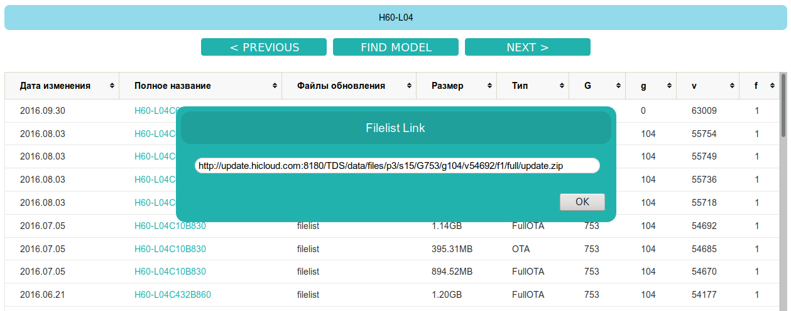
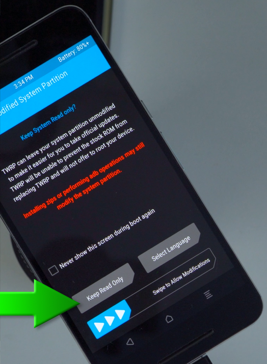

Здесь записываются изыскания того, как поставить Custom Recovery и получить права Root (рутование) для телефона Huawei Honor 6 (модель H60-L04).
В моем случае стоит прошивка: H60-L04C10B830 (в ней используется Android 6.0 и EMUI 4.0.1).
Для всех последующих действий предполагается, что отладка по USB была включена в настройках телефона.
Проверка раблокировки загрузчика
Для выполнения всех действий, нужно разблокировать загрузчик. Я загрузчик уже разблокировал, но с тех пор телефон принудительно обновлялся пару раз по воздуху, хотя обновления были запрещены. При этих принудительных обновлениях, инициированных как я понимаю, компанией Huawei в обход желаний пользователей, слетел старый Custom Recovery, и телефон получил стандартный (стоковый) Recovery. Поэтому в первую очередь надо проверить, не заблокировался ли загрузчик.
Для этого нужно выключить телефон, подключить датакабель к компьютеру, затем включить его кнопками Power и Vol-. Кнопки держать до тех пор, пока не появится экран с зеленым роботом и надписью FASTBOOT&RESCUE MODE. Если внизу данного экрана написано PHONE Unlocked, то загрузчик разблокирован. Для полной проверки можно воспользоваться командой на компьютере, в тоот момент, когда виден вышеописаный экран:
./fastboot oem get-bootinfo
...
(bootloader) unlocked
OKAY [ 0.000s]
finished. total time: 0.000s
Водно, что загрузчик разблокирован.
Перезагрузить телефон в обычный режим, можно, удерживая кнопку включения более 10 секунд. Либо можно просто дать команду:
./fastboot reboot
И телефон перезагрузится в обычный режим.
Получение прошивки Custom Recovery
В качестве Custom Recovery можно использовать прошивку популярного проекта TWRP. Для Huawei Honor 6 прошивки лежат на странице:
https://twrp.me/huawei/huaweihonor6.html
Там можно получить следующие прошивки:
|
11.6M |
2017-05-17 21:30:01 EDT | |
|
11.6M |
2017-03-08 21:10:26 EST | |
|
11.5M |
2016-06-09 16:43:47 EDT |
Заливка Custom Recovery в телефон в область eRecovery
Для проведения действий по прошивке телефона, потребуется две консольных программы: adb и fastboot. Обычно они идут в составе пакета Android SDK, и лежат в каталоге /sdk/platform-tools.
Для заливки Custom Recovery используется программа fastboot. Чтобы телефон мог работать в режиме взаимодействия с fastboot, его надо перезагрузить в режим bootloader. Для этого используется команда:
./adb reboot bootloader
Кстати, перезагрузиться в данный режим можно и вручную, с помощью кнопок Power и Vol-, как это было описано в разделе "Проверка раблокировки загрузчика".
Когда телефон перезагрузится в данном режиме (на экране телефона появится зеленый робот, и сверху надпись FASTBOOT&RESCUE MODE), надо проверить, как он виден на компьютере:
./fastboot devices
В полученном списке должен быть виден идентификатор телефона, и справа от него должно быть написано fastboot. Это значит, что телефон находится в режиме fastboot. Данную команду на Linux нужно исполнять из-под пользователя root, иначе будет примерно такое сообщение:
no permissions (user in plugdev group; are your udev rules wrong?); see [http://developer.android.com/tools/device.html] fastboot
У Huawei Honor 6 есть возможность иметь две установленных Recovery-прошивки. Другими словами, на флеш-диске телефона предусмотрено две области, с которых можно загрузиться в Recovery-режиме. Эти области называются Recovery и eRecovery. В терминах программы fastboot они называются recovery и recovery2 соответственно.
Заливку TWRP надо делать в область eRecovery. В области Recovery останется стандартная стоковая Recovery-прошивка, а в область eRecovery и нужно залить TWRP. Для дальнейших действий с телефоном, можно будет загружаться в Recovery-режиме как с области Recovery, так и с области eRecovery (на самом деле, это не работает, см. ниже).
Для прошивки в область eRecovery используется команда:
./fastboot flash recovery2 полный_путь_к_образу_прошивки_Custom_Recovery/имя_файла_прошивки.img
Прошивка льется быстро, на экран должно быть выведено примерно следующее:
target reported max download size of 471859200 bytes
sending 'recovery2' (11800 KB)...
OKAY [ 1.207s]
writing 'recovery2'...
OKAY [ 0.331s]
finished. total time: 1.538s
После этих действий телефон надо перезагрузить (держать кнопку Power около 10 секунд). Или дать команду:
./fastboot reboot
Телефон будет перезагружен.
Загрузка с области eRecovery
Для загрузки с области eRecovery, в телефоне Huawei Honor 6 надо произвети не совсем обычные действия:
То есть, для включения телефона, кнопка Power, как ни странно, не нажимается!
Однако, столкнулся с такой проблемой: загрузиться в режиме eRecovery получилось только один раз. При этом появился кружок внутри которого нарисован USB-разъем, а внизу написано Installing Update. Загрузка дошла до 5%, потом остановилась. Прождал час, ничего не произошло, выключил.
После этого даже если заново прошить область eRecovery прошивкной TWRP, загрузиться данным способом невозможно: вместо TWRP запускается интерфейс стандартного (стокового) Recovery.
Поэтому решено шить TWRP просто в область Recovery. Но сначала, чтобы не получить кирпич, надо сделать полное резервное копирование данных, а так же нужно иметь образ стандартного Recovery, чтобы прошить его в случае, если TWRP не заработает, будучи прошитой в область Recovery.
Получение образа стокового Recovery
С некоторых пор компания Huawei перестала размещать прошивки на своем официальном сайте поддержки. В объяснениях компании сказано, что они считают, что пользователям небезопасно самостоятельно ставить разные прошивки, и они должны платно обращаться в специализированные сервисные центры.
Любители телефонов Huawei Honor знают, что есть бесплатный проект MultiTool, который пишут энтузиасты, через который можно прошивать стоковые и кастомные прошивки. При этом прошивки выкачиваются откуда-то из сети. Проблема в том, что текущая версия MultiTool 8 не поддерживает Huawei Honor 6 по причине устаревания телефона более чем на три релиза (уже есть Honor 10).
Но зато у данной команды энтузиастов есть онлайн-проект Firmware finder:
https://pro-teammt.ru/firmware-database
На этой странице можно указать модель, например H60-L04, нажать кнопку FIND MODEL, и будет найден список прошивок только для этой модели прямо на сайте компании Huawei. Зная полный идентификатор текущей прошивки телефона (например, H60-L04C10B830), можно найти файлы для данной версии:
|
Дата изменения |
Полное название |
Файлы обновления |
Размер |
Тип |
G |
g |
v |
f |
|
2016.07.05 |
1.14GB |
FullOTA |
753 |
104 |
54692 |
1 | ||
|
2016.07.05 |
395.31MB |
OTA |
753 |
104 |
54685 |
1 | ||
|
2016.07.05 |
894.52MB |
FullOTA |
753 |
104 |
54670 |
1 |
Для получения линка на скачивание, надо нажать на строку filelist:

Прошивки отличаются размером и версией (столбец v). В данном случае, самая старшая версия 54692, поэтому можно взять ее.
Внимание! Файлы с типами OTA или FullOTA содержат полные прошивки всех разделов диска телефона. Но из всех этих данных нужна только прошивка Recover-области.
После скачивания архива, который обычно имеет название update.zip, надо извлечь из него файл UPDATE.APP. Этот файл - это полный образ диска телефона с кучей разделов. И из него нужно извлечь образ Recovery-раздела.
Извлечь образ Recovery-раздела можно с помощью скрипта, который можно взять на GitHub вот в этом репозитарии:
https://github.com/marcominetti/split_updata.pl
На компьютере должен быть установлен интерпретатор Perl. В Linux обычно он уже стоит, если нет - не проблема доустановить. Данный скрипт надо натравить на файл UPDATE.APP вот так:
./splitupdate.pl UPDATE.APP
В ответ будут извлечены все образы разделов, и помещены в подкаталог ./output:
FFFFFFFF MD5RSA 128.00B 2016.06.23 16.40.41
FFFFFFFF CRC 2.51KB 2016.06.23 16.40.41
F0FFFFFF CURVER 23.00B 2016.06.23 16.40.41
F1FFFFFF VERLIST 1.37KB 2016.06.23 16.40.41
01000000 PTABLE 17.00KB 2016.06.23 16.40.41
12000000 XLOADER 44.88KB 2016.06.23 16.40.41
02000000 FASTBOOT 744.88KB 2016.06.23 16.40.41
03000000 FW_LPM3 87.50KB 2016.06.23 16.40.41
04000000 FW_HIFI 2.12MB 2016.06.23 16.40.41
05000000 TEEOS 1.08MB 2016.06.23 16.40.41
06000000 BOOT 10.35MB 2016.06.23 16.40.41
07000000 RECOVERY 13.46MB 2016.06.23 16.40.41
0A000000 MODEMNVM_UPDATE 6.73MB 2016.06.23 16.40.42
0D000000 3RDMODEM 5.33MB 2016.06.23 16.40.42
Будут получены следующие файлы:
>cd ./output/
>ls -la
итого 2049492
drwxr-xr-x 2 xi xi 4096 янв 3 13:04
.
drwxr-xr-x 3 xi xi 4096 янв 3 13:04
..
-rw-r--r-- 1 xi xi 5592620 янв 3 13:04 3RDMODEM.img
-rw-r--r-- 1 xi xi 10852352 янв 3 13:04 BOOT.img
-rw-r--r-- 1 xi xi 128100 янв 3 13:04 CRC.img
-rw-r--r-- 1 xi xi 23 янв 3 13:04 CURVER.img
-rw-r--r-- 1 xi xi 459078660 янв 3 13:04 CUST.img
-rw-r--r-- 1 xi xi 8011776 янв 3 13:04 DTS.img
-rw-r--r-- 1 xi xi 762752 янв 3 13:04 FASTBOOT.img
-rw-r--r-- 1 xi xi 2226560 янв 3 13:04 FW_HIFI.img
-rw-r--r-- 1 xi xi 89600 янв 3 13:04 FW_LPM3.img
-rw-r--r-- 1 xi xi 128 янв 3 13:04 MD5RSA.img
-rw-r--r-- 1 xi xi 1826944 янв 3 13:04 MODEM_DSP.img
-rw-r--r-- 1 xi xi 37823232 янв 3 13:04 MODEM.img
-rw-r--r-- 1 xi xi 7055448 янв 3 13:04 MODEMNVM_UPDATE.img
-rw-r--r-- 1 xi xi 17408 янв 3 13:04 PTABLE.img
-rw-r--r-- 1 xi xi 14116864 янв 3 13:04 RECOVERY.img
-rw-r--r-- 1 xi xi 1576960 янв 3 13:04 SENSORHUB.img
-rw-r--r-- 1 xi xi 1548274964 янв 3 13:05 SYSTEM.img
-rw-r--r-- 1 xi xi 1131392 янв 3 13:04 TEEOS.img
-rw-r--r-- 1 xi xi 1402 янв 3 13:04 VERLIST.img
-rw-r--r-- 1 xi xi 45952 янв 3 13:04 XLOADER.img
Из всего этого набора файлов потребуется файл RECOVERY.img.
Для перестраховки можно скачать архив с другой версией прошивки, например OTA 54685. Если извлечь таким же способом образ Recovery, и сравнить его с первым полученным, то окажется, что они полностью побайтово идентичны.
Теперь есть две Recovery-прошивки: TWRP (custom recovery) и стоковое Recovery, и можно двигаться дальше.
Заливка TWRP в область Recovery
Заливка в TWRP область Recovery происходит так же как и в область eRecovery, просто вместо области recovery2 указывается область recovery. Телефон переводится в режим fastboot (см. выше), после чего дается команда:
./fastboot flash recovery полный_путь_к_образу_прошивки_Custom_Recovery/имя_файла_прошивки.img
После заливки телефон надо перегрузить:
./fastboot reboot
И далее его надо загрузить в режиме Recovery. Для этого телефон выключается, отсоединяется датакабель, и зажимаются кнопки Vol+ и Power. Кнопки держать до тех пор, пока не загрузится TWRP. Должен появиться вот такой экран:

Чтобы ознакомиться с TWRP, можно нажать кнопку Keep Read Only, благодаря которой раздел с системой будет оставаться без изменений при любых действиях.
Рутование телефона с помощью SuperSu
Для того, чтобы получить Root-пава, потребуется пакет с проектом SuperSu, который устанавливается из TWRP. Сначала надо получить zip-архив с программой SuperSu, поместить его каким-либо образом на телефон, запустить установку этого пакета из раздела Install, который есть в TWRP.
Программу SuperSu можно (было бы) взять с официального сайта:
Однако хостинг Amazon, на котором размещен сайт, требует какой-то ключ, и не отдает zip-архив. Причина видимо в том, что в 2017 году разработчик прекратил развивать проект SuperSu.
Поэтому придется брать на 4PDA:
https://4pda.ru/forum/index.php?showtopic=712967&st=0#entry45567270
В этой ветке есть версия SuperSu 2.78 Pro, можно скачать ее. Однако, при установке, если поставить галку проверки контрольной суммы zip-архива, будет выдана ошибка распаковки. При этом если проверить zip-архив на компьютере, то он совершенно нормальный.
Поэтому для установки SuperSu нужно сделать следующее: каким либо образом разместить zip-архив на флеш-карте телефона или во внутренней памяти, или на флешке, подключаемой через кабель OTG. Загрузиться в Custom Recovery TWRP, выбрать пункт Install, указать данный zip-файл. Галку проверки zip-архива не ставить, а галку перезагрузки после инсталляции поставить. После инсталляции и перезагрузки появится иконка программы с большим бело-зеленым знаком диеза "#" на последней свободной странице программ.
Как пользоваться программой SuperSu
Программа SuperSu работает следующим образом: она выдает права root только тем программам, которые эти права запрашивают, и именно в тот момент, когда программа для своих действий производит запрос прав рута у системы. При этом выполнение запущенной программы приостанавливается, и появляется окно SuperSu с запросом, можно ли данной программе выделить права рута.
Для проверки, что SuperSu работает, можно воспользоваться следующим способом. Нужно установить терминал Termux (доступен в Google Play Market или в F-DROID), и внутри этого терминала надо ввести команду, которая может работать только под рутом:
> mount
В ответ будет выдано, что программа не может быть выполнена. Тогда надо дать команду:
> su
После чего появится окно запроса на разрешения выделения Termux прав root. Если нажать "Разрешить", то команда su успешно выполнится, и консоль начнет работать под рутом. Убедиться в этом можно с помощью команды:
> whoami
root
и тепер будет работать команда mount, которая покаже информацию обо всех примонтированных разделах в системе Android.
Результат
В этой статье описано, как с помощью консольных команд Linux можно получить root-права на телефоне Huawei Honor 6. Была установлена прошивка TWRP (Custom recovery), Была установлена программа SuperSu.
Если необходимо вернуть Recovery-подсистему к стоковому виду, надо просто прошить в раздел Recovery стоковую прошивку RECOVERY.img, которая достается из файла UPDATE.APP.